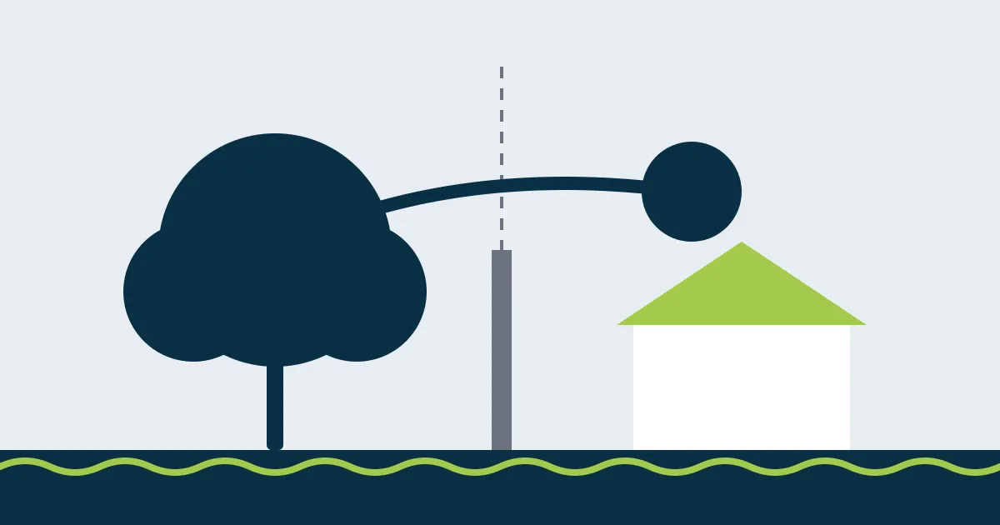

Árvore do vizinho invade meu terreno: posso podar? O que diz a lei

As folhas entopem a sua calha, os galhos arranham o telhado, as raízes levantam o piso da garagem. A árvore é do vizinho, mas o problema está no seu terreno. Você já tentou conversar, mas nada mudou. Afinal, pode ou não pode podar?
A resposta curta é: em muitos casos, pode. Mas existem regras e cuidados que evitam briga, processo e até multa ambiental.
O que diz o Código Civil
O artigo 1.283 do Código Civil é direto:
“As raízes e os ramos de árvore, que ultrapassarem a estrema do prédio, poderão ser cortados, até o plano vertical divisório, pelo proprietário do terreno invadido.”
Traduzindo: imagine uma parede invisível subindo da linha da divisa. Tudo o que passou dessa parede para o seu lado (galhos ou raízes) pode ser cortado por você, dono do terreno invadido. A lei não exige que você peça licença ao vizinho para isso.
Dois artigos vizinhos ajudam a completar o quadro:
- Art. 1.282: se o tronco está bem em cima da divisa, a árvore é dos dois vizinhos.
- Art. 1.284: os frutos que caem no seu terreno são seus.
Os cuidados que fazem diferença
Ter o direito não significa que qualquer corte é seguro. Antes de pegar a serra, veja:
- Só até a divisa. Você não pode entrar no terreno do vizinho nem cortar o que está do lado dele sem autorização.
- Autorização ambiental. O Código Civil resolve a questão entre vizinhos, mas não dispensa as regras ambientais do município. Em cidades como Cabo Frio, poda de árvore depende de autorização da prefeitura e a poda drástica é proibida.
- Raízes exigem atenção redobrada. Cortar raízes grossas de um lado só pode desestabilizar a árvore e fazê-la cair, inclusive sobre a sua casa.
- Danos geram responsabilidade. Se o corte mal feito matar a árvore ou derrubar parte dela no terreno do vizinho, a discussão pode ir parar na Justiça.
Quando a conversa não resolve
Se a árvore inteira oferece risco (está podre, inclinada sobre a sua casa, com galhos grandes ameaçando cair), cortar só o que passa da divisa não resolve. Nesses casos, o caminho costuma ser:
- Registrar o problema: fotos, vídeos e, se possível, um laudo técnico do risco.
- Notificar o vizinho por escrito, pedindo a poda ou a remoção em prazo razoável.
- Comunicar a Secretaria de Meio Ambiente, que pode vistoriar a árvore.
- Procurar a Justiça (o Juizado Especial Cível costuma resolver casos mais simples) para obrigar o vizinho a agir, sempre com orientação de um advogado.
Este artigo é informativo e não substitui a orientação de um advogado para o seu caso.
O melhor caminho ainda é o acordo
Muitas vezes o vizinho nem sabe que a árvore está causando problema, ou não sabe a quem chamar. Um orçamento em mãos e a proposta de dividir o custo costumam resolver em uma conversa o que levaria meses na Justiça.
Fontes
As informações sobre leis e valores refletem a legislação e a prática na data de publicação. Regras municipais podem mudar: confirme sempre com a Secretaria de Meio Ambiente da sua cidade.
Quer resolver isso com segurança?
Mande fotos da árvore pelo WhatsApp e receba uma avaliação e um orçamento da Poda Azul.